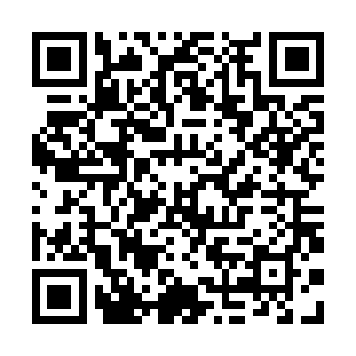

Tamil Cultural Association, IIT Bombay
Tamil Fest 2022 - Tickets
April 16, 2022 - LT PCSA, IIT Bombay
Coupon Code: gyfxfi88bv
Name: Antony Prakash
Mobile Number: 8825719817
Mail Id: 204380004@iitb.ac.in
Category: Student/Proj. Staff
Type: Only for Tamizh Fest 2022
Coupon (Self): 1
Coupon (Guest): 3
Tot. Coupons: 4
Dinner Slot: 8:00 PM
Contribution:
Total Paid: 1240
